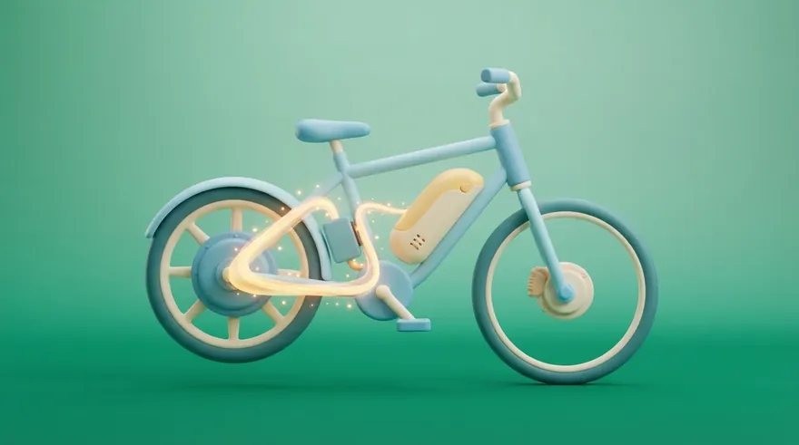

Technologie · 4ème · Séquence La chaîne d'énergie
De la batterie à la roue,
l'énergie fait un voyage
Tu appuies sur l'accélérateur d'un vélo électrique : la roue tourne. Mais entre la batterie et le bitume, l'énergie traverse toute une chaîne de composants — et elle change même de FORME en route. Ce voyage a un nom : la chaîne d'énergie. Embarquement immédiat.

OBJECTIFS DE LA SÉQUENCE
- Nommer les quatre maillons de la chaîne d’énergie : alimenter ou stocker, distribuer, convertir, transmettre.
- Situer un composant en panne dans la chaîne à partir d’un symptôme.
- Calculer le rendement d’un moteur et expliquer où part l’énergie perdue.
COMPÉTENCES TRAVAILLÉES — BO n° 9 du 29 février 2024
| T2 · C4 | Décrire et caractériser l’organisation interne d’un objet ou d’un système technique et ses échanges avec son environnement (énergies, données) |
| T2 · C5 | Identifier un dysfonctionnement d’un objet technique et y remédier |
Repère de progressivité : 4e — repérer les transformations et les flux d’énergie au sein d’un objet technique.
Les 4 fonctions de la chaîne d'énergie
ALIMENTER
Fournir l'énergie à l'objet, depuis une source.
batterie, prise secteur, réservoir d'essenceDISTRIBUER
Laisser passer l'énergie… ou pas, ou un peu : c'est le robinet.
interrupteur, variateur, relaisCONVERTIR
Changer la FORME de l'énergie.
moteur (élec→mécanique), lampe (élec→lumière)TRANSMETTRE
Amener l'énergie mécanique jusqu'à l'endroit utile.
chaîne, courroie, engrenages, cardansLa chaîne d'énergie du vélo électrique
L'énergie change de forme
| Conversion | Composant qui la réalise | Dans quel objet ? |
|---|---|---|
| électrique → mécanique | le moteur électrique | VAE, perceuse, lave-linge |
| électrique → lumineuse | la lampe, la LED | phare, plafonnier |
| électrique → thermique | la résistance chauffante | grille-pain, sèche-cheveux |
| chimique → électrique | la pile, la batterie | télécommande, smartphone |
| chimique → → mécanique | le moteur à explosion | voiture thermique |
Le bloc CONVERTIR est le cœur de la chaîne : c'est lui qui transforme l'énergie reçue en l'énergie dont l'objet a besoin.
Le rendement : rien ne se perd… si, un peu
rendement = énergie UTILE ÷ énergie ABSORBÉE (toujours < 1, soit < 100 %)
Les pertes en cascade
Toutes les chaînes se ressemblent
| Objet | Alimenter | Distribuer | Convertir | Transmettre |
|---|---|---|---|---|
| Vélo électrique | batterie | variateur (poignée) | moteur électrique | chaîne + roue |
| Sèche-cheveux | prise secteur | interrupteur | résistance + petit moteur | hélice (flux d'air) |
| Voiture thermique | réservoir d'essence | pédale + injection | moteur à explosion | boîte de vitesses + roues |
| Perceuse sans fil | batterie | gâchette | moteur électrique | réducteur + mandrin |
Au TP, tu joueras au mécanicien : diagnostiquer des VAE en panne à partir des symptômes !
À retenir
- La chaîne d'énergie décrit le trajet de l'énergie dans un objet : ALIMENTER → DISTRIBUER → CONVERTIR → TRANSMETTRE.
- Le bloc convertir change la FORME de l'énergie (le moteur : électrique → mécanique) ; le bloc distribuer est le robinet (interrupteur, variateur).
- Aucune conversion n'est parfaite : une partie de l'énergie est perdue, presque toujours en chaleur.
- rendement = énergie utile ÷ énergie absorbée — toujours inférieur à 100 %.
- Les pertes se cumulent à chaque maillon : améliorer UN maillon améliore toute la chaîne.
Trace écrite
À recopier sur le cahier, schéma compris.
- Toute chaîne d’énergie suit le même ordre : alimenter ou stocker, distribuer, convertir, transmettre.
- Convertir, c’est changer l’énergie de forme ; transmettre, c’est la déplacer sans la changer.
- Une panne se situe dans un seul maillon : le symptôme indique lequel.
- Le rendement = énergie utile ÷ énergie absorbée ; le reste part surtout en chaleur.